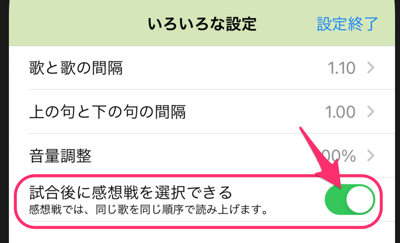

試合後に、終わったばかりの試合を振り返る「感想戦」をサポートするため、Ver.6.5から、試合を終了/中断した直後に同じ歌を同じ順番で読み上げる「感想戦」機能を追加しました。
試合後に感想戦を始められるようにするには、アプリの設定を変更する必要があります。
トップ画面や読み上げ画面のボタンを押して「いろいろな設定」画面を開き、「試合後に感想戦を選択できる」スイッチを有効(緑)にしてください。(この設定は自動保存されます)
これにより、すべての歌を読み終わった時の画面や、試合を中断するボタンを押したときのポップアップで、「感想戦を始める」という選択肢を選べるようになります。